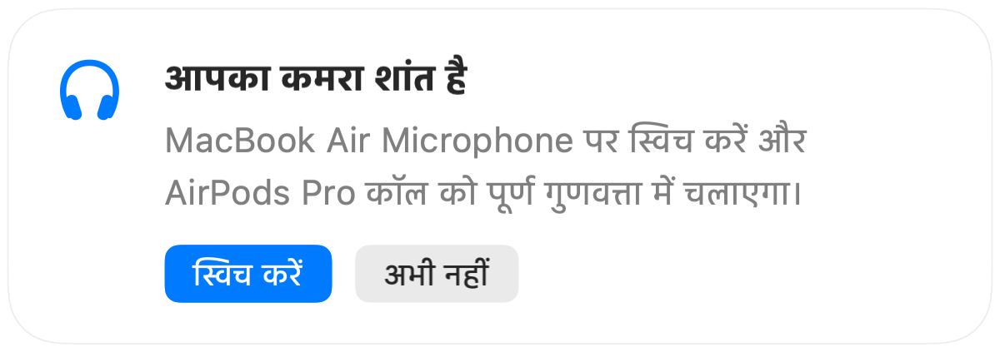

Mac पर कॉल के दौरान AirPods की आवाज़ क्यों खराब हो जाती है
AirPods के साथ किसी कॉल में शामिल हों और अचानक आवाज़ सपाट व धीमी हो जाती है। यह कोई ख़राबी नहीं है। जब कोई ऐप AirPods माइक्रोफ़ोन का उपयोग करता है, तो Bluetooth, AirPods को कॉल मोड पर स्विच कर देता है जो सब कुछ बहुत कम गुणवत्ता में चलाता है।
इसका उपाय यह है कि आप अपने Mac के माइक्रोफ़ोन में बोलें और AirPods से केवल आवाज़ सुनें। शांत कमरे में आपके Mac का माइक भी उतना ही अच्छा लगता है, और कॉल फिर से पूर्ण गुणवत्ता में सुनाई देती है। जब आपका कमरा शांत होता है, तो Muffle पहचान लेता है और स्विच करने का सुझाव देता है।
कॉल में पूर्ण गुणवत्ता बनाए रखें
- 1
Muffle इंस्टॉल करें और “कमरे के लिए सबसे अच्छा माइक सुझाएं” को ऑन रहने दें।
- 2
हमेशा की तरह AirPods के साथ अपनी कॉल में शामिल हों।
- 3
जब Muffle बताए कि आपका कमरा शांत है, तो “स्विच करें” पर क्लिक करें।
- 4
यदि बाद में शोर बढ़ जाता है, तो Muffle फिर से AirPods माइक का सुझाव देता है।

- यह स्विच तब काम करता है जब आपका कॉल ऐप सिस्टम के डिफ़ॉल्ट माइक्रोफ़ोन का उपयोग करता है। Google Meet, Zoom और Teams में डिफ़ॉल्ट या सिस्टम जैसा ही विकल्प चुनें।
- Mac के माइक का उपयोग करते समय उसके पास रहें। Muffle इसका सुझाव केवल तभी देता है जब वह आपको स्पष्ट रूप से सुन सकता हो।
अक्सर पूछे जाने वाले सवाल
Mac कॉल पर AirPods की आवाज़ खराब क्यों सुनाई देती है?
Bluetooth एक ही समय में उच्च गुणवत्ता वाले स्टीरियो और आपकी आवाज़ दोनों को नहीं ले जा सकता, इसलिए माइक उपयोग में होने पर AirPods कॉल मोड पर आ जाते हैं।
क्या Muffle माइक्रोफ़ोन अपने आप स्विच करता है?
नहीं। Muffle केवल बेहतर माइक्रोफ़ोन का सुझाव देता है। जब तक आप “स्विच करें” पर क्लिक नहीं करते, तब तक कुछ भी नहीं बदलता।